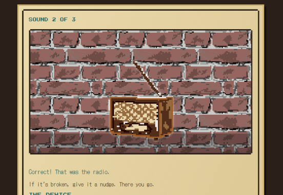
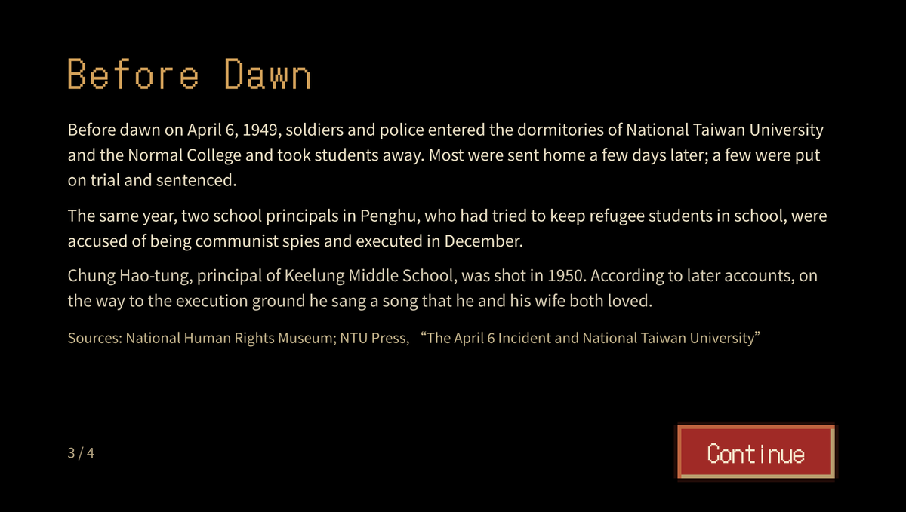
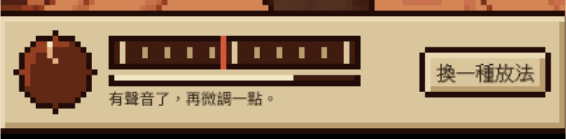
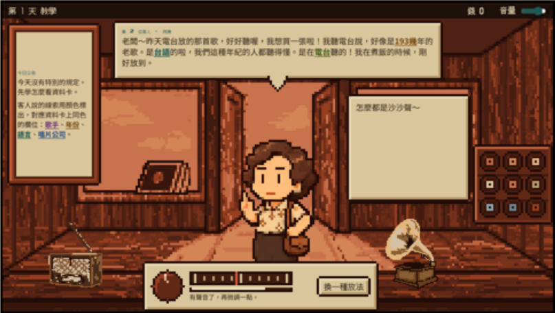

1. Challenges
Version 1
Players match different versions of the song "Longing for the Spring Breeze" with different devices, such as a gramophone, a radio and a cassette, that represent different eras of Taiwanese history. Players learn about each era after they arrange the devices on the Taiwanese history timeline.



Upsides
The pixel style fits the retro tone. The history came through: testers called it serious, moving and solid.
Downsides, concept
- It felt like an interactive display in a museum.
- The experience felt short.
- Testers did not call it fun or interesting.
Downsides, UX
- Unclear guidance (timeline).
- While a song played, players clicked the screen or elsewhere.
- Choosing a device was not intuitive.
Keep the pixel style and the weight of the history. Change the form of play and the guidance.
2. Design decisions
Version 2
Decision 1: Game loop, the record shop
it felt like an interactive display in a museumAdded a game loop of "selling records" so players can listen to different Taiwanese music and learn information about the records in the process.

Decision 2: Elements that change through the day
a short experience, wasn't interestingPlayers feel how everyday life was affected as martial law tightened.


- Each day stands for a stage of martial law.
- The rules come from real regulations and arrive one at a time: banned records on day 2, radio programmes on day 3, a cap on Taiwanese-language songs on day 4.
- Money, rent and marks give each rule a cost.
- Customers' conversations change from day to day.
Decision 3: Ending and history text
some players found the endings heavyA fictional happy ending set against what really happened, so players see that real history was not resolved so lightly.


- Ending 1 is the only unrealistic ending: the player drives off the secret-police agent by throwing records.
- The other four endings stay heavy.
- History pages follow, describing what happened in Taiwan under martial law (1949 to 1987), with sources.
UI improvements
- Radio: left and right buttons with a frequency scale, replacing the round knob.
- Gramophone: a record plays when dropped, with no needle step.
- Interface: larger type and buttons, and a notice board in labelled sections.




3. Evaluation
Player feedback
Version 1
- Felt like an interactive display in a museum, not a game.
Version 2
- Players called it a game.
- Players liked the art.
- Ending 1 made players laugh.